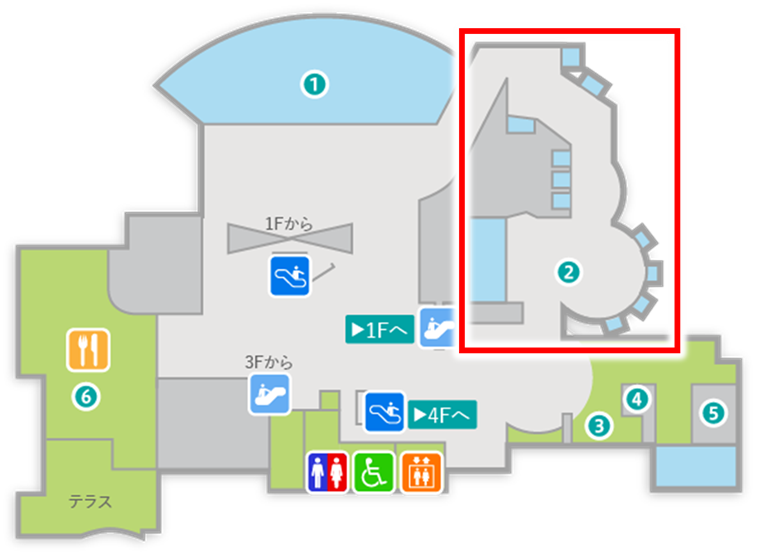

全身にこぶがあり岩にそっくりな魚で、40cmほどに成長します。
小笠原諸島や奄美大島以南のインド洋・西太平洋に分布。岩場やサンゴ礁に住み、猛毒をもつ背びれの棘があります。
県内の定置網で捕獲された個体を展示しています。

（飼育員 ゆうか）
インド洋・西太平洋
Q1：オニダルマオコゼの背びれには何がある？
Q2：オニダルマオコゼはどこに隠れて魚を待ち伏せる？
刺されると命に関わることもあるので注意が必要です。
鹿児島県本土の南にのびるサンゴ礁の島々「南西諸島」周辺にくらす生きものたちを展示しています。 それぞれの水槽では奄美大島を中心としたさまざまな海中環境を再現し、いろどり鮮やかな魚類だけでなく、サンゴや海藻、ヒトデ、ナマコのなかまなどサンゴ礁に暮らす生きものの多様なくらしを紹介しています。
